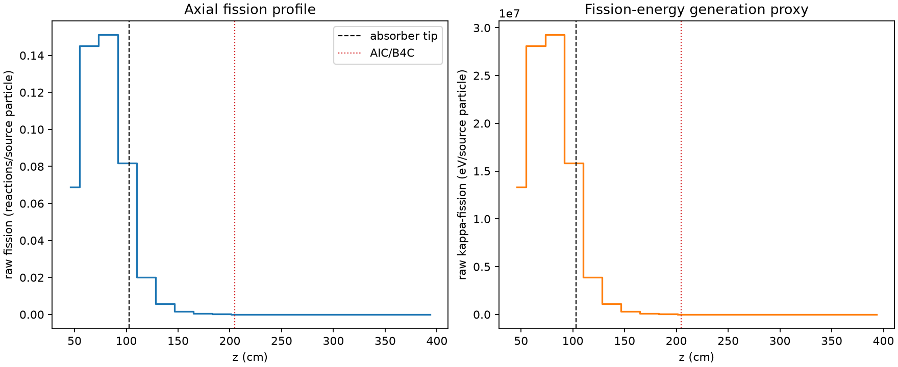
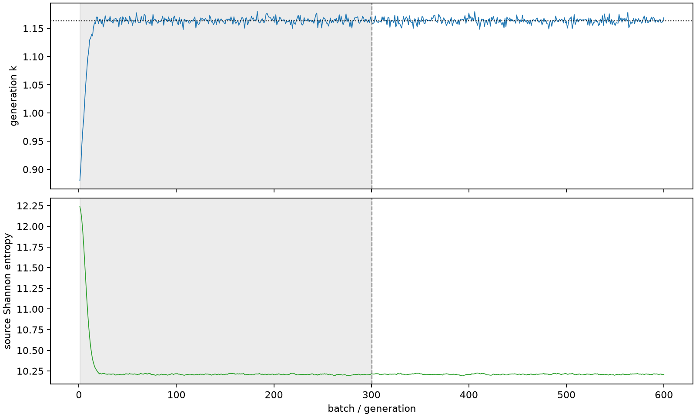

| field | value |
|---|---|
| experiment | V2-STAGE_256_OGRENCI_02-0008 |
| k | 1.163591744400038 |
| MC standard error | 0.00018010129030491325 |
| seconds | 899.9518720340056 |
| acceptance | not_assessed |
| convergence | review_required |
Completed is output integrity only; physical and statistical review required. Zero tallies do not prove zero production or zero uncertainty.
| diagnostic | value |
|---|---|
| geometric fuel voxels | 5280 |
| zero fission tally voxels | 1782 |
| low signal fuel voxels | 2902 |
| low signal fission share | 9.958206502233114e-05 |
| low signal kappa share | 9.962352341915937e-05 |
| important fission share | 0.9500128487425066 |
| previous filter included | 2378 |
| duration estimate s | 1562.5173488400023 |
| actual minus estimate s | -662.5654768059967 |
| fission relative MC error | statistics |
|---|---|
| all_geometric_fuel | {"voxels": 5280, "positive_mean_voxels": 3498, "zero_mean_voxels": 1782, "undefined_relative_error_voxels": 1782, "median": 0.04261886720986251, "p95": 0.9322635420180939, "maximum": 1.0000000000000002} |
| low_signal | {"voxels": 2902, "positive_mean_voxels": 1120, "zero_mean_voxels": 1782, "undefined_relative_error_voxels": 1782, "median": 0.5608444472964234, "p95": 1.0, "maximum": 1.0000000000000002} |
| important_95pct | {"voxels": 1102, "positive_mean_voxels": 1102, "zero_mean_voxels": 0, "undefined_relative_error_voxels": 0, "median": 0.005716910553320657, "p95": 0.0076580929498742045, "maximum": 0.013378933214953138} |
| outside_previous_filter | {"voxels": 2902, "positive_mean_voxels": 1120, "zero_mean_voxels": 1782, "undefined_relative_error_voxels": 1782, "median": 0.5608444472964234, "p95": 1.0, "maximum": 1.0000000000000002} |
| kappa_fission relative MC error | statistics |
|---|---|
| all_geometric_fuel | {"voxels": 5280, "positive_mean_voxels": 3498, "zero_mean_voxels": 1782, "undefined_relative_error_voxels": 1782, "median": 0.042558579914195316, "p95": 0.9313916567161034, "maximum": 1.0000000000000002} |
| low_signal | {"voxels": 2902, "positive_mean_voxels": 1120, "zero_mean_voxels": 1782, "undefined_relative_error_voxels": 1782, "median": 0.5594839508785586, "p95": 1.0, "maximum": 1.0000000000000002} |
| important_95pct | {"voxels": 1102, "positive_mean_voxels": 1102, "zero_mean_voxels": 0, "undefined_relative_error_voxels": 0, "median": 0.005710510968457915, "p95": 0.007648296215075998, "maximum": 0.013361788767967103} |
| outside_previous_filter | {"voxels": 2902, "positive_mean_voxels": 1120, "zero_mean_voxels": 1782, "undefined_relative_error_voxels": 1782, "median": 0.5594839508785586, "p95": 1.0, "maximum": 1.0000000000000002} |
| axial bin | fission share | kappa-fission share |
|---|---|---|
| 1 | 0.14514825281098798 | 0.1451497956402676 |
| 2 | 0.30573843828216796 | 0.3057269275540721 |
| 3 | 0.31807419168541634 | 0.31806240443716266 |
| 4 | 0.17225317632908732 | 0.1722584534315741 |
| 5 | 0.04200467862973868 | 0.04201631991350503 |
| 6 | 0.011963861767466227 | 0.011967262657977122 |
| 7 | 0.003430428121081044 | 0.0034314242284532513 |
| 8 | 0.0010061004547456428 | 0.0010064042423695253 |
| 9 | 0.0002805027123785731 | 0.0002805967172707105 |
| 10 | 7.119494401608741e-05 | 7.122451131218085e-05 |
| 11 | 1.9316999114876115e-05 | 1.932560741804671e-05 |
| 12 | 7.835040645065935e-06 | 7.837715126842636e-06 |
| 13 | 1.7618191730164712e-06 | 1.7631123192268545e-06 |
| 14 | 2.573371002219332e-07 | 2.5716803224322575e-07 |
| 15 | 3.0668809993601265e-09 | 3.0631394327954205e-09 |
| 16 | 0.0 | 0.0 |
| 17 | 0.0 | 0.0 |
| 18 | 0.0 | 0.0 |
| 19 | 0.0 | 0.0 |
| 20 | 0.0 | 0.0 |
Histories include the inactive-to-active transition at batch 300. kappa-fission approximates fission energy production, not total heat deposition.

